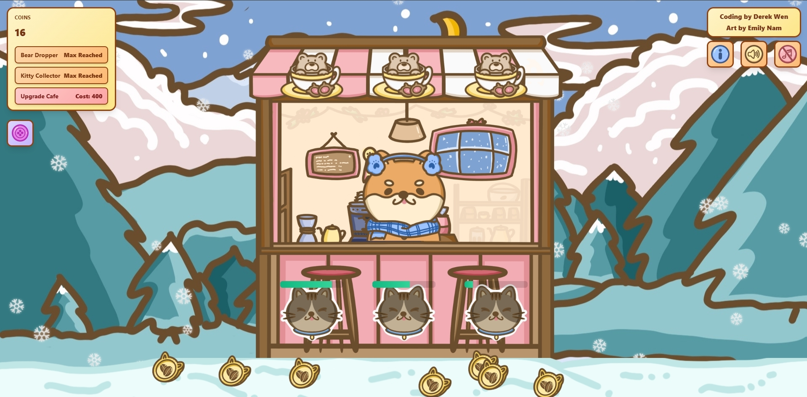
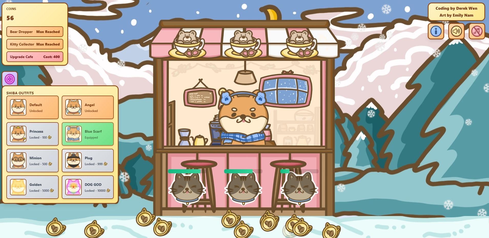
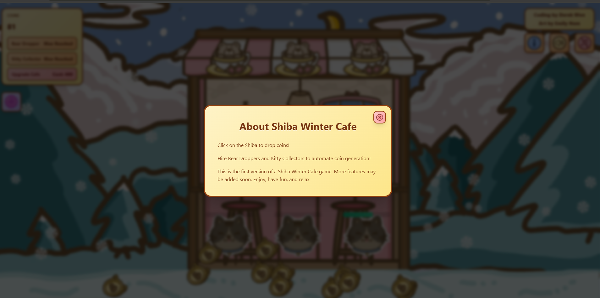
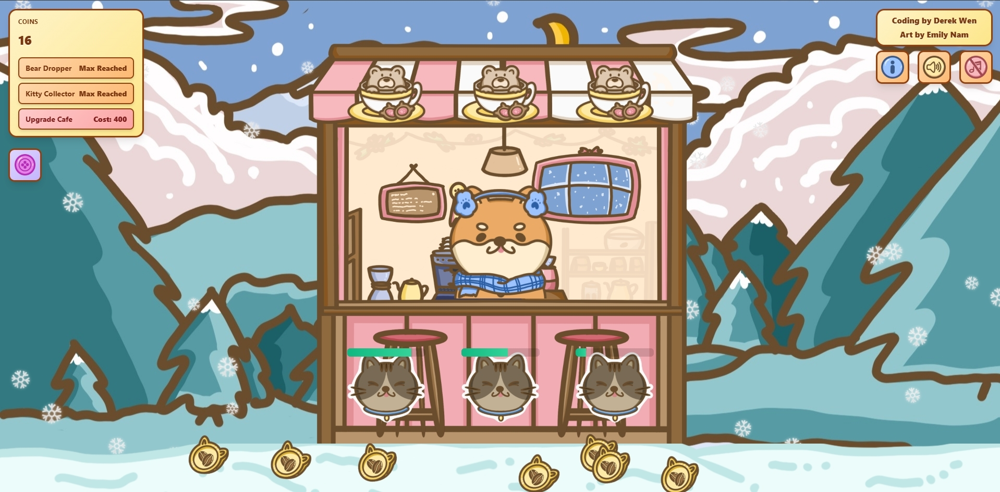
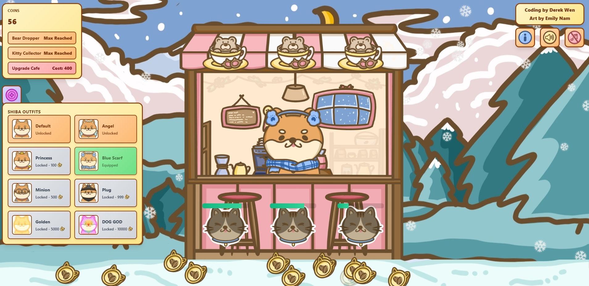
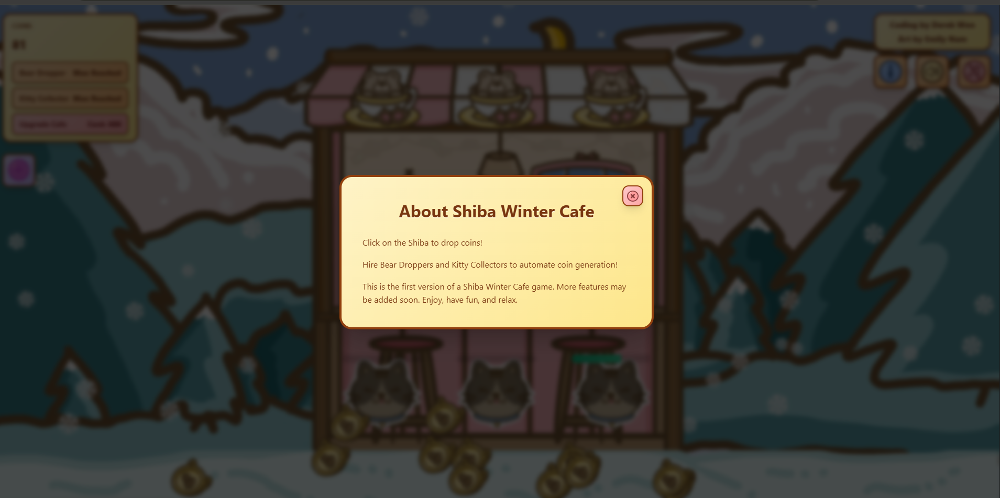
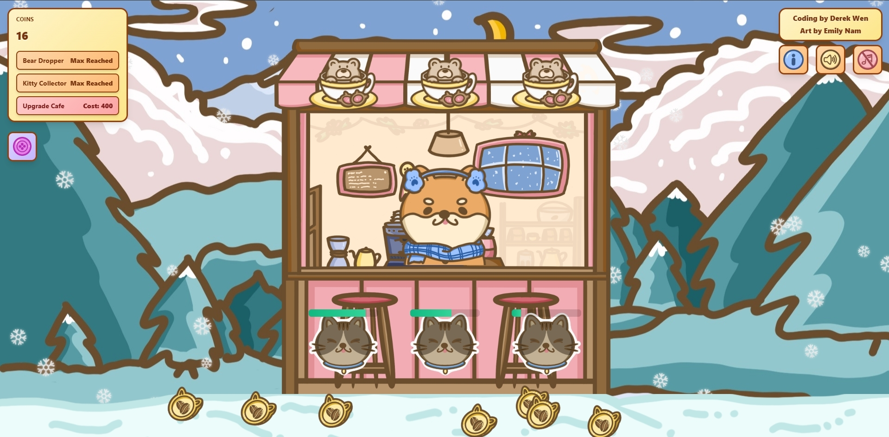
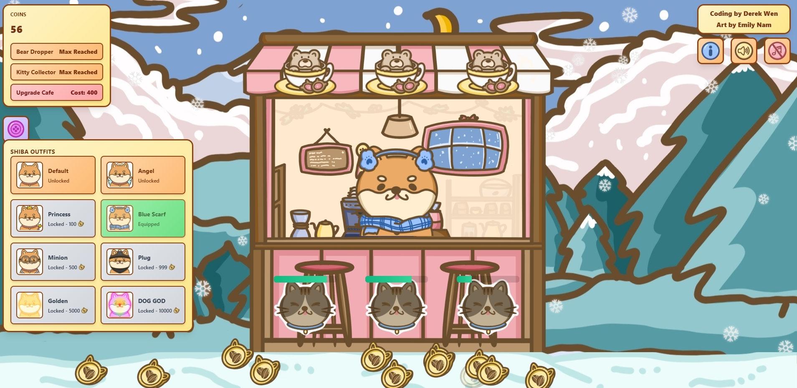
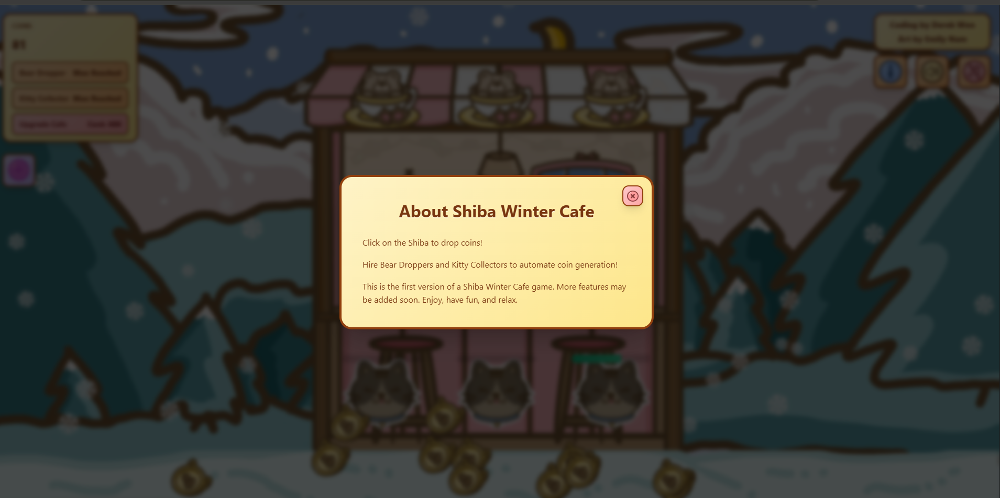

Back to Projects
 





Shiba Winter Cafe
A cozy winter-themed cafe experience featuring adorable Shiba Inu companions. This project combines warm aesthetics with interactive elements to create an immersive and relaxing virtual environment.
The cafe atmosphere is designed to evoke feelings of warmth and comfort during cold winter days, complete with soft lighting, snow-covered windows, and the gentle company of friendly Shiba dogs.


